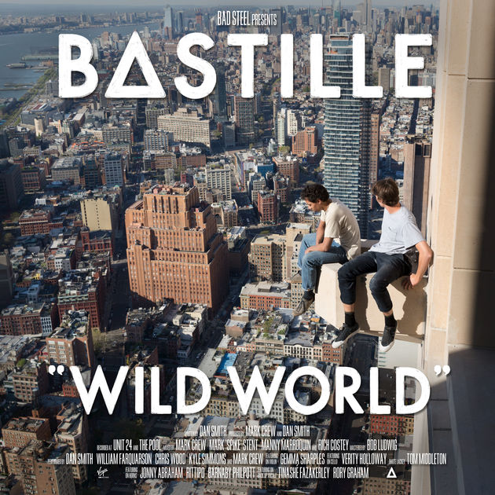
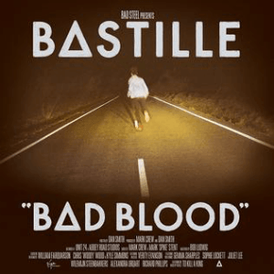

Quarter Past Midnight Video
Quarter Past Midnight Lyrics
[Verse 1]
It's a quarter past midnight
As we cut through the city
Yeah, yeah, yeah, the streets are getting restless
Good times bad decisions
Yeah, yeah, yeah, it's a quarter past midnight
And the sirens are mending some hearts
But we're the losers on the back seats
Singing "Love Will Tear Us Apart"
It's a quarter past midnight
Still avoiding tomorrow
It's a quarter past midnight
But we're just getting going
[Chorus]
We keep on running
Running through a red light
Like we're trying to burn the night away
Away-way, oh, away-way, oh
[Post-Chorus]
This is my favorite part oh
Help me piece it all together darling
Before it falls apart oh
Help me piece it all together
[Verse 2]
It's a quarter past midnight
And the speakers are blowing
Yeah, yeah, We want the bodies on the billboards
Not the lives underneath them
Yeah, yeah, yeah, and now we're crawling up the walls again
And it's a quarter past twelve
And you said we'd leave this place in dust
And fall from heaven straight through hell
We never know what we have
We never knew what we had
[Chorus]
We keep on running
Running through a red light
Like we're trying to burn the night away
Away-way, oh, away-way, oh
Why are we always chasing after something
Like we're trying to throw our lives away?
Away-way, oh, away-way, oh
[Post-Chorus]
This is my favorite part oh
Help me piece it all together darling
Before it falls apart oh
Help me piece it all together
[Bridge]
(I can't remember, I can't remember
I can't remember, I can't remember)
It's a quarter past midnight
And the secrets are flowing
Our lips are getting looser
I don't know what I'm saying
We never knew what we had
I never know what I've had
[Chorus]
We keep on running
Running through a red light
Like we're trying to burn the night away
Away-way, oh, away-way, oh
Why are we always chasing after something
Like we trying to throw our lives away?
Away-way, oh, away-way, oh
[Post-Chorus]
This is my favorite part so
Help me piece it all together darling
Before it falls apart
Help me piece it all together